Level 1¶
The prototypes for the following routines can be found at include/elemental/blas-like.hpp, while the implementations are in include/elemental/blas-like/level1/.
Adjoint¶
Note
This is not a standard BLAS routine, but it is BLAS-like.
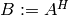.
- void Adjoint(const Matrix<T>& A, Matrix<T>& B)¶
The serial version (templated over the datatype).
- void Adjoint(const DistMatrix<T, U, V>& A, DistMatrix<T, W, Z>& B)¶
The distributed version (templated over the datatype and the individual distributions of
 and
and  ).
).
Axpy¶
Performs  (hence the name axpy).
(hence the name axpy).
- void Axpy(T alpha, const Matrix<T>& X, Matrix<T>& Y)¶
The serial implementation (templated over the datatype).
- void Axpy(T alpha, const DistMatrix<T, U, V>& X, DistMatrix<T, U, V>& Y)¶
The distributed implementation (templated over the datatype and the shared distribution of
and ).
Conjugate¶
Note
This is not a standard BLAS routine, but it is BLAS-like.
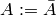. For real datatypes, this is a no-op.
- void Conjugate(Matrix<T>& A)¶
The serial version (templated over datatype).
- void Conjugate(DistMatrix<T, U, V>& A)¶
The distributed version (templated over the datatype and the distribution of
).
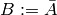.
- void Conjugate(const Matrix<T>& A, Matrix<T>& B)¶
The serial version (templated over the datatype).
- void Conjugate(const DistMatrix<T, U, V>& A, DistMatrix<T, W, Z>& B)¶
The distributed version (templated over the datatype and the individual distributions of
and ).
Copy¶
Sets 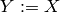.
- void Copy(const Matrix<T>& X, Matrix<T>& Y)¶
The serial implementation (templated over the datatype).
- void Copy(const DistMatrix<T, U, V>& A, DistMatrix<T, W, Z>& B)¶
The distributed implementation (templated over the datatype and the individual distributions of
and ).
DiagonalScale¶
Note
This is not a standard BLAS routine, but it is BLAS-like.
Performs either 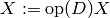 or 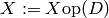,
where 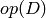 equals 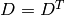, or 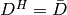, where
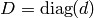 and  is a column vector.
is a column vector.
- void DiagonalScale(LeftOrRight side, Orientation orientation, const Matrix<T>& d, Matrix<T>& X)¶
The serial implementation (templated over the datatype).
- void DiagonalScale(LeftOrRight side, Orientation orientation, const DistMatrix<T, U, V>& d, DistMatrix<T, W, Z>& X)¶
The distributed implementation (templated over the datatype and the individual distributions of
and 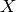).
DiagonalSolve¶
Note
This is not a standard BLAS routine, but it is BLAS-like.
Performs either 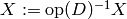 or
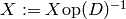, where and
is a column vector.
- void DiagonalSolve(LeftOrRight side, Orientation orientation, const Matrix<F>& d, Matrix<F>& X, bool checkIfSingular=false )¶
The serial implementation (templated over the datatype).
- void DiagonalSolve(LeftOrRight side, Orientation orientation, const DistMatrix<F, U, V>& d, DistMatrix<F, W, Z>& X, bool checkIfSingular=false )¶
The distributed implementation (templated over the datatype and the individual distributions of
and ).
Dot¶
Returns  .
.  and
and  are both allowed to be
stored as column or row vectors, but will be interpreted as column vectors.
are both allowed to be
stored as column or row vectors, but will be interpreted as column vectors.
- T Dot(const Matrix<T>& x, const Matrix<T>& y)¶
The serial implementation (templated over the datatype).
- T Dot(const DistMatrix<T, U, V>& x, const DistMatrix<T, W, Z>& y)¶
The distributed implementation (templated over the datatype and the individual distributions of
and ).
Dotc¶
Same as Dot. This routine name is provided since it is the usual BLAS naming convention.
- T Dotc(const Matrix<T>& x, const Matrix<T>& y)¶
The serial implementation (templated over the datatype).
- T Dotc(const DistMatrix<T, U, V>& x, const DistMatrix<T, W, Z>& y)¶
The distributed implementation (templated over the datatype and the individual distributions of
and ).
Dotu¶
Returns 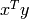, which is not an inner product.
- T Dotu(const Matrix<T>& x, const Matrix<T>& y)¶
The serial implementation (templated over the datatype).
- T Dotu(const DistMatrix<T, U, V>& x, const DistMatrix<T, W, Z>& y)¶
The distributed implementation (templated over the datatype and the individual distributions of
and ).
MakeTrapezoidal¶
Note
This is not a standard BLAS routine, but it is BLAS-like.
Sets all entries outside of the specified trapezoidal submatrix to zero. The diagonal of the trapezoidal matrix is defined relative to either the upper-left or bottom-right corner of the matrix, depending on the value of side; whether or not the trapezoid is upper or lower (analogous to an upper or lower-triangular matrix) is determined by the uplo parameter, and the last diagonal is defined with the offset integer.
- void MakeTrapezoidal(LeftOrRight side, UpperOrLower uplo, int offset, Matrix<T>& A)¶
The serial implementation.
- void MakeTrapezoidal(LeftOrRight side, UpperOrLower uplo, int offset, DistMatrix<T, U, V>& A)¶
The distributed implementation.
Nrm2¶
Returns 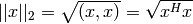. As with most other
routines, even if is stored as a row vector, it will be interpreted
as a column vector.
- typename Base<F>::type Nrm2(const Matrix<F>& x)¶
- typename Base<F>::type Nrm2(const DistMatrix<F>& x)¶
Scal¶
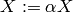.
- void Scal(T alpha, Matrix<T>& X)¶
The serial implementation (templated over the datatype).
- void Scal(T alpha, DistMatrix<T, U, V>& X)¶
The distributed implementation (templated over the datatype and the distribution of ).
ScaleTrapezoid¶
Note
This is not a standard BLAS routine, but it is BLAS-like.
Scales the entries within the specified trapezoid of a general matrix. The parameter conventions follow those of MakeTrapezoidal described above.
- void ScaleTrapezoid(T alpha, LeftOrRight side, UpperOrLower uplo, int offset, Matrix<T>& A)¶
The serial implementation.
- void ScaleTrapezoid(T alpha, LeftOrRight side, UpperOrLower uplo, int offset, DistMatrix<T, U, V>& A)¶
The distributed implementation.
Transpose¶
Note
This is not a standard BLAS routine, but it is BLAS-like.
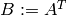.
- void Transpose(const Matrix<T>& A, Matrix<T>& B)¶
The serial version (templated over the datatype).
- void Transpose(const DistMatrix<T, U, V>& A, DistMatrix<T, W, Z>& B)¶
The distributed version (templated over the datatype and the individual distributions of
and ).